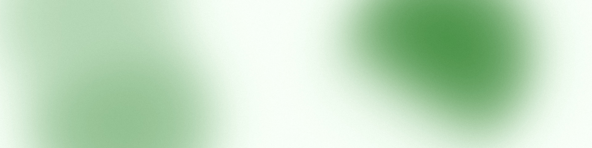

Brand · The house
The house
khyzr is a branded house. khyzr.ai and khyzr.studio keep its name, its marks, and its typeface, and each brings a color of its own.

The three, side by side.
 The masterbrand
The masterbrand
A productA product
One masterbrand and two products, set side by side.
| khyzr | khyzr.ai | khyzr.studio | |
|---|---|---|---|
| Stands as | The masterbrand | A product | A product |
| Wordmark | khyzr | khyzr, followed by .ai | khyzr, followed by .studio |
| Symbol | In its four greens | The same drawing, in its own colors | The same drawing, in its own colors |
| Color | Green | Periwinkle to aqua | Ember: yellow to rose |
| Ground | White, with Ink | Black | Black |
| Typeface | Outfit, with Manrope for labels | Outfit only | Outfit only |
| Primary action | Book a conversation | Get started | Get started |
What a product inherits.
- The name. A product is named khyzr.[x] and carries the masterbrand. No new brand names.
- The wordmark. khyzr's own, unchanged, with the product's suffix after it.
- The symbol. The same drawing, recolored for the product by the system, never by hand.
- The typeface. Outfit, at the same three weights.
- The voice. All voice and messaging speak as one brand.
What is a product's own.
khyzrGreen
khyzr.aiPeriwinkle to aqua
khyzr.studioEmber: yellow to rose
Color, and what comes with it.
- Its color. One family of color for each product, and a black ground to carry it.
- Its textures. Each product has backgrounds of its own. The mesh and the logo pattern are khyzr's, and stay green.
- Its action. The words on its primary button.
- Each product's chapter holds the detail: khyzr.ai and khyzr.studio.
The rules of the house.
- The name. A product is named khyzr.[x] and carries the masterbrand. No new brand names.
- The marks. A product appears as its icon or its wordmark, never both. There are no product lockups.
- The voice. All voice and messaging speak as one brand.
- Credit. Partners and clients get factual credit, never co-branding.
The house in one line
One name. One system. A color for each.
- khyzr is one house under one name.
- Every product keeps the name, the wordmark, the symbol's shape, the type, and the voice.
- Each product brings one thing of its own: its color.
- Green is khyzr's. Periwinkle to aqua is khyzr.ai's. Ember, led by yellow, is khyzr.studio's.
- So a product never looks like a different company. It looks like khyzr in another light.
What each one is
| What it is | |
|---|---|
| khyzr | The masterbrand: the company, and the one team clients work with. |
| khyzr.ai | Agents for the whole business. |
| khyzr.studio | Design, on subscription. |
The eight house rules
- People sign as khyzr. An email signature, a business card, a LinkedIn profile, and a letterhead carry khyzr's mark, whichever product the person works on.
- A product leads only at home. Its mark leads on its own site, its own deck, and its own posts.
- Products meet only under khyzr. One product's mark never sits on another product's surface. Where both are shown, khyzr is the host and its mark leads.
- A color stays with its owner. A product's color dresses that product's surfaces, and the one block on a khyzr surface where the product is shown. Green never dresses a product.
- Icon or wordmark, never both. There are no product lockups.
- The name is the endorsement. A product needs no "by khyzr" line and no khyzr logo beside its own.
- One voice. The products speak as khyzr does, by the same eight rules. Only the subject and the action change.
- Credit, never co-branding. Partner practices present as khyzr. Partners and clients are credited in words.
Who signs as what.
| Surface | Signs as |
|---|---|
| A person's signature, card, and LinkedIn profile | khyzr |
| Letterhead, and any document from the company | khyzr, with the product named in words |
| A product's site, its deck, its social posts | The product |
| A deck or a post about more than one product | khyzr |
| A khyzr page that shows the products | khyzr leads; each product sits in its own block |
When khyzr appears on a product
- In the name, always. That is the whole endorsement.
- In the copyright line and on the legal pages, which name the company.
- In the signature of whoever is writing.
- Nowhere else. No khyzr logo on a product's page, no khyzr Green in a product's palette.
A product that comes next
- It is named khyzr.[x]. No new brands.
- It takes the wordmark with its suffix, the symbol in a color of its own, and the same type and voice. Nothing else is new.
Clients and partners.
In partnership with X.
Partners and clients get factual credit, never co-branding.
- Write "In partnership with X.", "Built with X.", "Work with X.", or "X is a khyzr client."
- Never "khyzr × X", "Powered by khyzr", or "An official X partner".
- Never "former client" or "past client": the relationship is not written as finished.
- No partner logos in khyzr lockups, no shared marks, no dual-brand headers, no joint lockups.
- Where another company's mark is shown, the rules are on the Logos page.